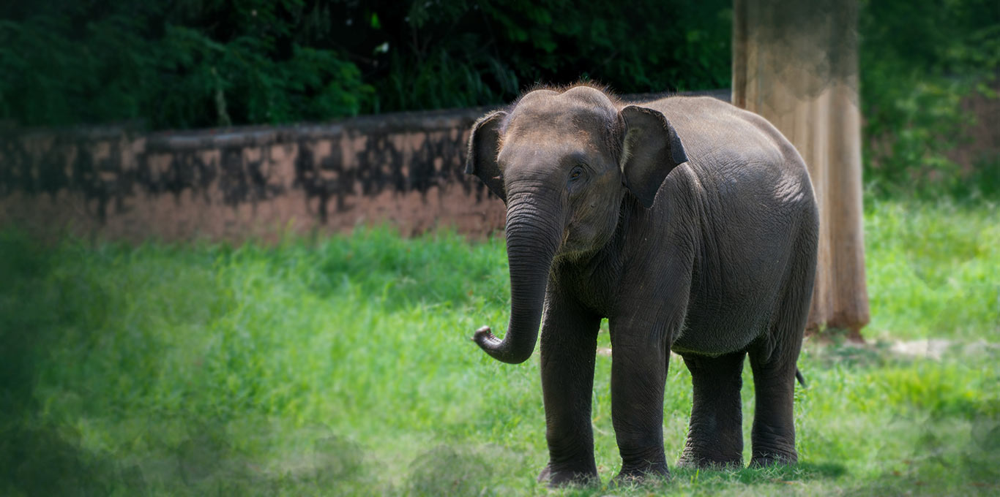

Welcome to Mysore Zoo


Welcome to Mysore zoo, our animals eagerly await you. Stretching across a 157-acre (64 ha)-expanse and situated at about 700 metres (0.43 miles) from Mysore Palace, it is the oldest zoo in India and one of the oldest in the world. One of the most popular zoos in India and one of the city's most popular attractions, it is home to a wide range of over 168 species.
Welcome to Mysore zoo, our animals eagerly await you. Stretching across a 157-acre (64 ha)-expanse and situated at about 700 metres (0.43 miles) from Mysore Palace, it is the oldest zoo in India and one of the oldest in the world. One of the most popular zoos in India and one of the city's most popular attractions, it is home to a wide range of over 168 species.